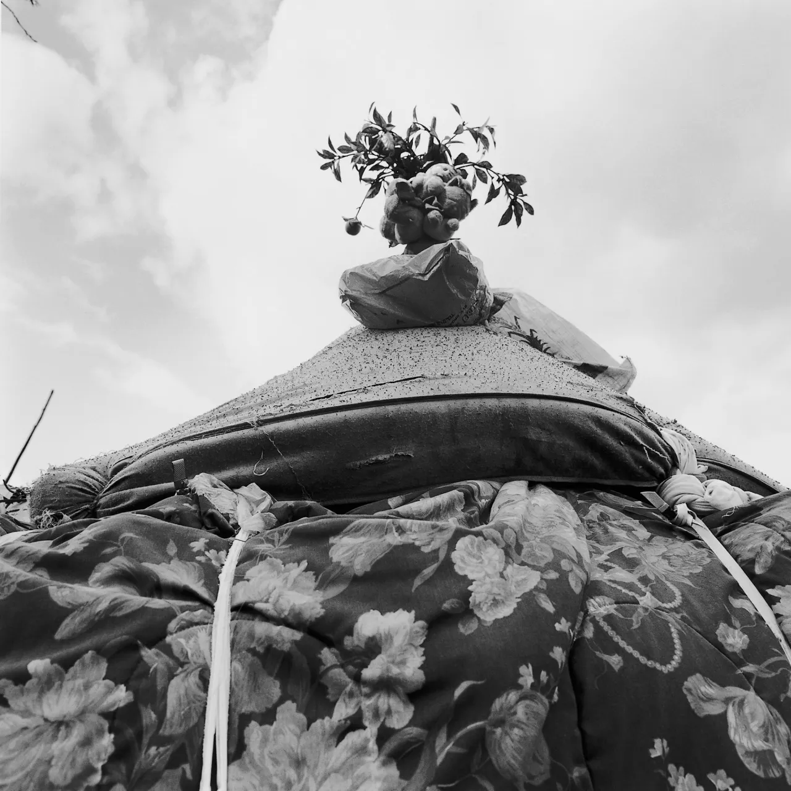

Transitory Gardens, Uprooted Lives
Yale University Press, 1995.
With text by Morton's colleague at Yale University, landscape architect Diana Balmori, Transitory Gardens, Uprooted Lives addresses gardens built by New York City unhoused people. Gardening despite their economic circumstances, the subjects of this book are aware that their gardens await imminent destruction by city authorities and the private owners of their appropriated spaces. The images that make up this book span a wide swath of the Lower East Side, dispute “the garden as the domain of settled or prosperous individuals only,” and consider how such spaces might reflect their caretakers’ desire for basic comforts.

